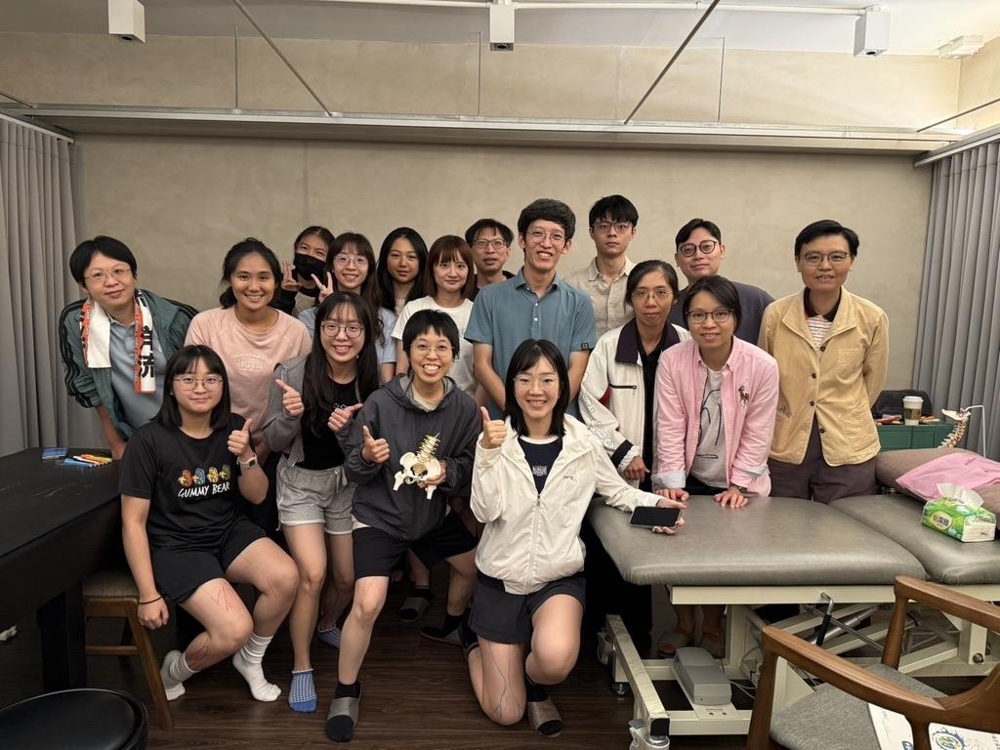
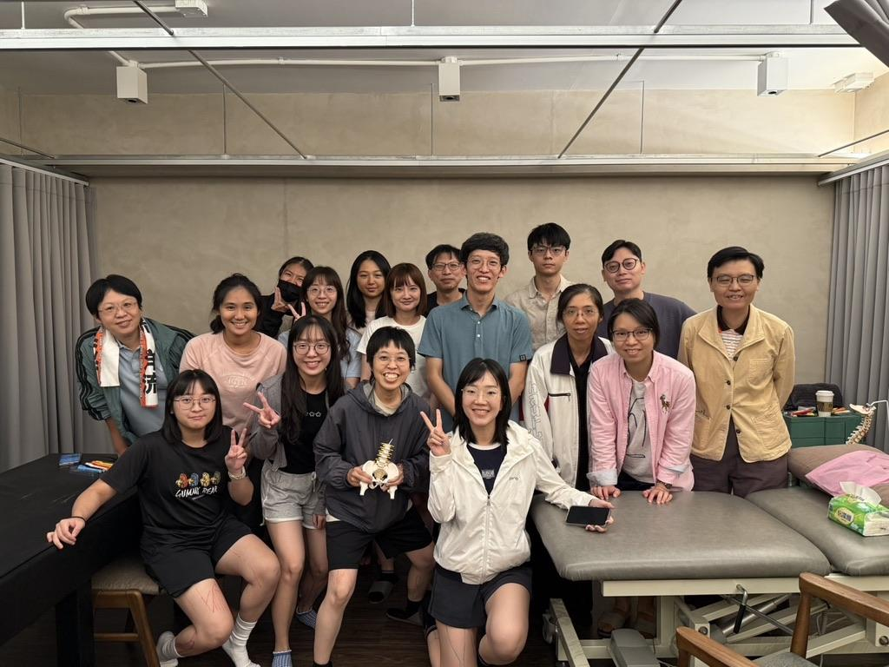

第五屆完訓：中醫師的臨床針傷 Hub，基礎與臨床的轉接頭
【第五屆完訓：中醫師的臨床針傷 Hub，基礎與臨床的轉接頭】
今天，第五屆表面解剖工作坊正式完訓。
這一梯從中南部特別北上的醫師特別多，真心感謝大家願意為了一門課起個大早；也有不少是剛畢業、或還在實習中的年輕醫師。這次學員們玩得非常認真：表面解剖的畫記、手法操作，還有理學檢查前後差異的比較，一項一項親手覆核。
課程中也分享了一些常見疼痛的處置思路。到後來，大家乾脆把自己診間遇到的臨床難題，一個個拿出來討論。這就是中醫師的職業病：一心想替自己的患者，找到解決不適的方法。
中醫師的養成路上，錦囊妙招學了很多。但透過人體解剖、肌動學與生物力學的現代學理做演繹串接，我們在診間才能更有效率地掌握原理，對處理疼痛也多出更多可能性。這正是開設這門課的原因之一：讓「我以為我在處理的目標」與「我實際做到的目標」之間的差距，越來越接近。
我自己給這門課的定位，是新世代中醫師的臨床針傷 Hub，是基礎與臨床之間的轉接頭。接上之後，針傷的世界是無可限量的，就像魯夫要當海賊王的冒險旅途，總是人外有人、天外有天。希望透過這樣的工作坊，讓更多中醫師看到多采多姿的針傷眼界。
今年的兩個梯次，到今天完成了目標，接下來就是 2027 了。縱使步調慢了點，但對的事情就持續做：滾動式修正，滴水穿石，積沙成塔。我相信我期待的那個針傷未來，會一天比一天更接近。
第六屆「表面解剖觸診與針傷臨床應用」已開放報名（2027/5/16・6/13）：
https://tcmdrerichuang.com/shichu/surface-anatomy-6.html
太初中醫診所 東門中醫
中醫師 黃彥鈞
#表面解剖 #觸診 #徒手治療 #工作坊 #拾初

